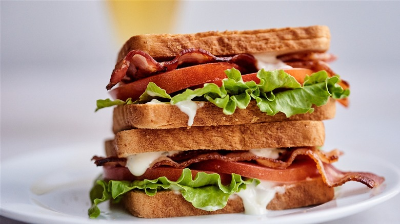

BLT

Description
A BLT is a classic sandwich made with crispy bacon, fresh lettuce, and juicy tomatoes. It's a simple yet incredibly satisfying combination of flavors. The crispy bacon adds a salty and smoky element, while the lettuce and tomatoes provide a refreshing crunch and natural sweetness.
The ingredients are typically sandwiched between toasted bread slices and can be enhanced with mayonnaise or other condiments for added creaminess.
Ingredients
- 4 slices of bacon
- 2 leaves of lettuce
- 2 slices of tomato
- 2 slices bread, toasted
- 1 tablespoon mayo
Cooking Directions
- Cook bacon in a large, deep skillet over medium-high heat until evenly browned, about 10 minutes. Drain bacon on a paper towel-lined plate.
- Slightly toast both pieces of bread.
- Arrange cooked bacon, lettuce, and tomato slices on one slice of bread. Spread mayonnaise on the other slice of bread. Close to make a sandwich & cut in half if desired.